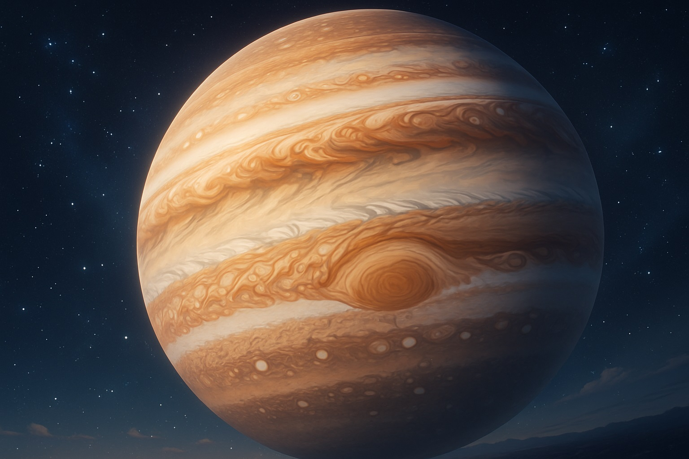
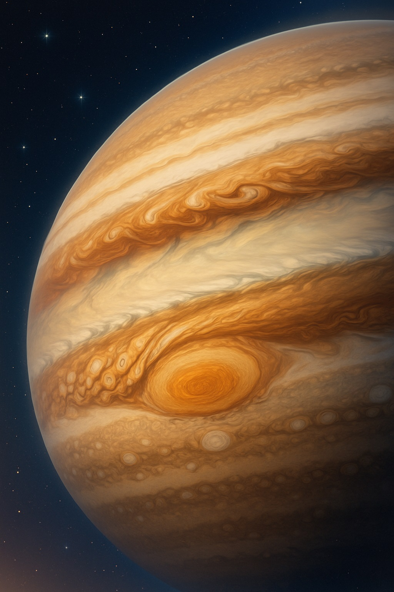
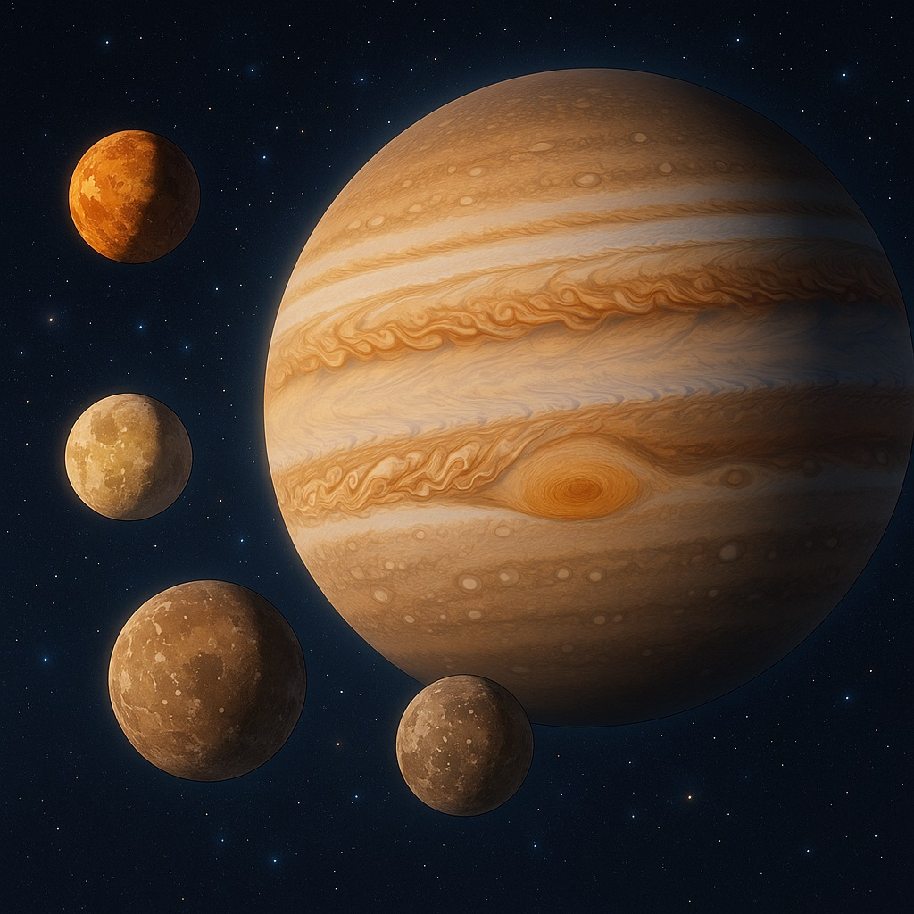
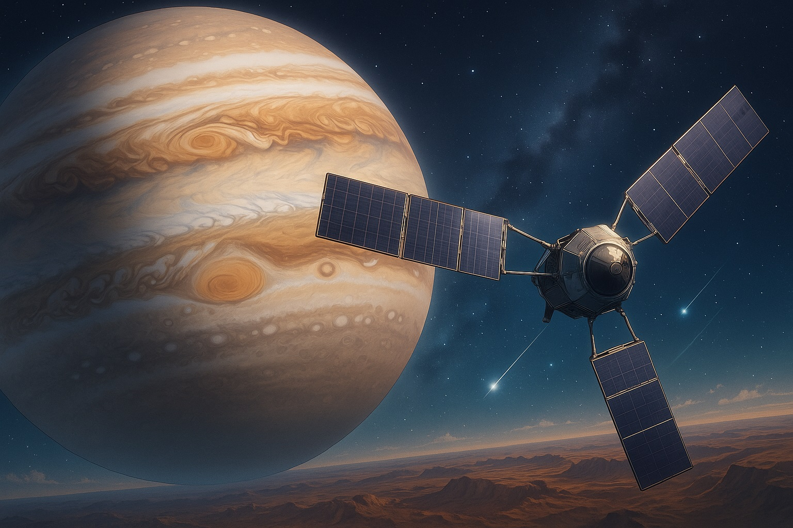

⚡️セーラー・ジュピターと学ぶ、木星のものがたり
〜大いなる守護の嵐をまといし、木星のものがたり〜

巨大な嵐をまとった木星は、まるで守護の戦士みたい！
ねえ、エミリー
今日は「セーラー・ジュピター」の名にちなんだ、太陽系最大の惑星・**木星（Jupiter）**について、一緒に学んでいこうね。
あの巨大な嵐と縞模様に包まれた姿は、まるで守護と力を司るジュピターのように、いつも私たちを見守ってくれているみたいだよ。
🌟 木星の基本的な特徴

地球とは比べ物にならないくらい大きな木星！
- 太陽系最大の王者：直径は地球の約11倍、体積は1321倍。質量は318倍を超え、太陽になりそびれた「未完の星」とも呼ばれるよ。
- ガスのかたまり：主成分は水素とヘリウム。固体の表面はなく、雲の上層しか見えない柔らかな雲の海なんだ。
- 超高速自転：わずか約10時間で1回転するから、赤道がぽっこり膨らみ、極はきゅっと潰れた形に。
セーラー・ジュピター：「天空の雷よ、降りそそげ！」
ジュピターは守護と勇気の戦士。木星もまた、荒れ狂う嵐と安定した巨大重力で、仲間を守る強さを示しているんだね。
ジュピターは守護と勇気の戦士。木星もまた、荒れ狂う嵐と安定した巨大重力で、仲間を守る強さを示しているんだね。
☁️ 大気の縞模様と大赤斑
木星のシンボル、大赤斑は地球よりずっと大きいんだ！
- 縞模様の秘密：冷たい雲と暖かい雲が帯状に並び、秒速150m以上の風が東西に吹き抜けるからできる波紋みたいな縞。
- 大赤斑：地球が2個以上入るほどの巨大な高気圧渦。1664年に見つかって以来、300年以上も消えることなく渦巻き続けているんだ。
- 小赤斑の登場：2005年には大赤斑の半分ほどの新しい渦「小赤斑」が出現し、大気は常にダイナミックに変動しているよ。
🪐 衛星の王国──ガリレオ衛星たち
木星の周りには、個性豊かな衛星がたくさん！
- イオ：木星最接近。潮汐加熱で100以上の活火山が噴火し、表面は硫黄で黄色に輝くまさに「火の星」。
- エウロパ：氷に覆われたひび割れ地形の下に、深さ100kmの塩水の海がある可能性大！生命が住むかもしれない夢の海だよ。
- ガニメデ：太陽系最大の衛星で、水星より大きい！氷と水の海、酸素の薄い大気をまとい、生命の可能性を秘めているんだ。
- カリスト：たくさんのクレーターが残る「あばた顔」の衛星。氷と岩石の混ざった地殻の奥に、まだ秘密の海が眠っているかも？
🚀 探査の歩みとジュノーの挑戦
ジュノー探査機が木星の秘密を解き明かしているよ。
1970年代の**ボイジャー探査機**が初めて大赤斑を間近で撮影し、木星の雲の奥行きを教えてくれたんだ。その後、**ガリレオ探査機**が1995年から約8年間、衛星たちの詳細な観測を実施。
そして2016年、NASAの**ジュノー**が到着。極域の多角形嵐や深い大気構造、強力な磁場を測定し、木星の内部に迫る新たなデータを送り続けているんだよ。
ジュノー：「ぼくは木星の内部を探っているよ！この巨大な星の謎を解き明かすんだ。」
まるでアルテミスのように、探査機たちも木星の謎を解くために大活躍しているんだね。
まるでアルテミスのように、探査機たちも木星の謎を解くために大活躍しているんだね。
✨ 守護と癒しの星
木星は、巨大な守護の渦と美しい縞模様が織りなす、「守りの力」と「変化のダイナミズム」を持つ星。
セーラー・ジュピターの強さと優しさのように、木星もまた、仲間たちを包み込む大きな存在として、太陽系を見守っているんだね。
次は、あの神秘的な輪をまとった「**土星（セーラー・サターン）**」に冒険に行こう！
今日の宇宙の神秘 - Astronomy Picture of the Day
コンテンツを読み込み中...